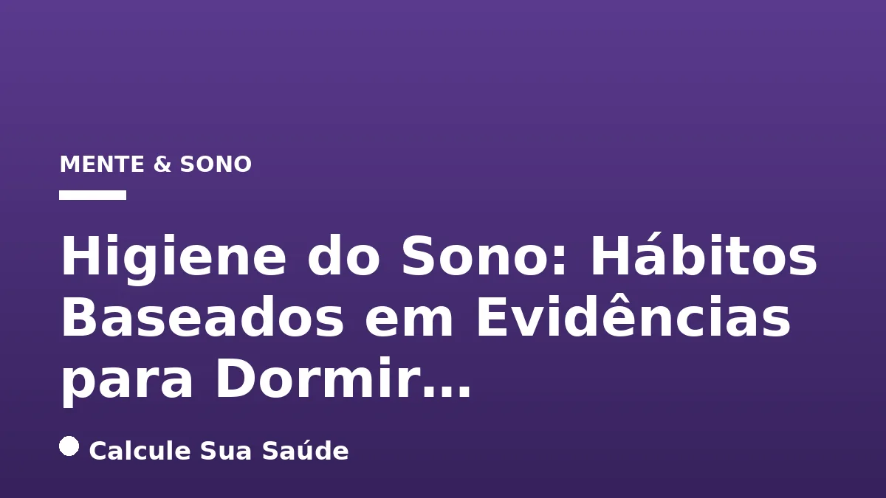

Aviso médico importante
Este conteúdo é educativo e informativo e não substitui a consulta, o diagnóstico ou o tratamento de um profissional de saúde. Em caso de sintomas, procure orientação médica.
Índice do Artigo
- 1. O Que é Higiene do Sono e Por Que Ela é Crucial?
- 2. A Importância Vital do Sono para a Saúde Integral
- 3. Distúrbios do Sono: Causas e Fatores de Risco
- 4. Sintomas da Privação de Sono e Insônia
- 5. Diagnóstico da Má Higiene do Sono
- 6. Estratégias Fundamentais para a Higiene do Sono: Hábitos Baseados em Evidências
- 7. Terapia Cognitivo-Comportamental para Insônia (TCC-I): Uma Abordagem Comprovada
- 8. Mitos e Verdades sobre o Sono: O Que a Ciência Diz
- 9. O Cenário do Sono no Brasil: Dados Epidemiológicos Preocupantes
- 10. Quando Procurar Ajuda Médica Especializada
- 11. Conclusão: Invista no Seu Sono, Invista na Sua Saúde
- 12. Perguntas frequentes
Em um mundo cada vez mais acelerado, o sono frequentemente se torna uma das primeiras vítimas da nossa rotina. No entanto, negligenciar a qualidade do sono é um erro com sérias repercussões para a saúde física e mental. A Organização Mundial da Saúde (OMS) já classifica os distúrbios do sono como uma epidemia global, afetando uma parcela significativa da população mundial. No Brasil, os números são alarmantes, com cerca de 72% dos brasileiros sofrendo de algum distúrbio relacionado ao sono, segundo a Fundação Oswaldo Cruz (Fiocruz).
Diante desse cenário, a higiene do sono emerge como uma das estratégias mais eficazes e baseadas em evidências para reverter esse quadro. Não se trata de uma solução rápida, mas sim de uma reeducação comportamental e ambiental que busca alinhar nossos hábitos para promover um sono mais profundo, contínuo e reparador. Este artigo aprofundará nos conceitos, causas, sintomas, e, principalmente, nas práticas comprovadas que podem transformar a sua relação com o sono.
Com base em rigor científico, exploraremos como pequenas mudanças no dia a dia podem ter um impacto gigantesco na sua qualidade de vida, fortalecendo a memória, a imunidade, otimizando o humor e prevenindo uma série de doenças crônicas. Prepare-se para desvendar os segredos de uma boa noite de sono e descobrir como a ciência pode guiar você para um descanso verdadeiramente restaurador.
Em resumo
- A higiene do sono é um conjunto de hábitos e práticas que otimizam a qualidade e duração do sono, sendo crucial para a saúde física e mental.
- Distúrbios do sono, como a insônia e a apneia do sono, são prevalentes no Brasil, afetando grande parte da população e aumentando riscos de doenças crônicas.
- Manter um horário de sono regular, criar um ambiente propício para o descanso e evitar estimulantes são pilares essenciais da higiene do sono.
- A exposição à luz natural durante o dia e a limitação da luz azul à noite são fundamentais para a regulação do ritmo circadiano e produção de melatonina.
- A Terapia Cognitivo-Comportamental para Insônia (TCC-I) é uma abordagem terapêutica com forte respaldo científico para tratar a insônia crônica.
- Muitos mitos sobre o sono persistem; a ciência enfatiza a individualidade da necessidade de sono e os perigos da privação crônica, que não pode ser totalmente compensada.
1. O Que é Higiene do Sono e Por Que Ela é Crucial?
A higiene do sono é definida como um conjunto de comportamentos e práticas ambientais e de estilo de vida que têm como objetivo primordial melhorar a qualidade e a duração do sono. Mais do que uma lista de regras, é uma reeducação comportamental que busca harmonizar os hábitos diários e o ambiente de descanso para promover um sono mais profundo e verdadeiramente reparador. O sono não é um luxo, mas uma necessidade biológica fundamental para a manutenção da saúde física e mental, atuando como um pilar para o bem-estar geral.
Durante o sono, o corpo realiza processos vitais de recuperação, reparo e consolidação. Isso inclui a reparação de tecidos, a liberação de hormônios essenciais, a organização e fortalecimento da memória, a regulação do humor e o fortalecimento do sistema imunológico. A privação crônica do sono, por outro lado, está associada a um risco aumentado de diversas condições de saúde, como doenças cardiovasculares, diabetes tipo 2, obesidade, depressão e ansiedade.
Para que o sono seja considerado de boa qualidade, três elementos são indispensáveis: duração suficiente, que permite ao indivíduo sentir-se descansado e alerta no dia seguinte; continuidade, caracterizada por ciclos de sono ininterruptos; e profundidade, que garante que o sono seja restaurador e verdadeiramente repousante. A higiene do sono atua diretamente na otimização desses três pilares.
2. A Importância Vital do Sono para a Saúde Integral
O sono é um estado fisiológico complexo e dinâmico, essencial para a manutenção da homeostase do organismo. Longe de ser um período de inatividade, é durante o sono que o cérebro e o corpo realizam funções cruciais que impactam diretamente a saúde e o desempenho diário. A qualidade do sono afeta tudo, desde a capacidade cognitiva até a regulação hormonal e a resposta imune.
Funções Cognitivas e Emocionais
Durante o sono, especialmente nas fases de sono profundo e REM (Rapid Eye Movement), o cérebro processa e consolida memórias, fortalece conexões neurais e elimina subprodutos metabólicos acumulados durante a vigília. A privação de sono pode levar a dificuldades de concentração, problemas de memória, redução da criatividade e da capacidade de tomada de decisões. Em nível emocional, a falta de sono contribui para irritabilidade, mau humor e maior vulnerabilidade ao estresse e a transtornos como a ansiedade e a depressão.
Saúde Física e Metabólica
O sono desempenha um papel fundamental na saúde física. Ele influencia a regulação hormonal, incluindo hormônios do apetite (leptina e grelina), o que explica a associação entre privação de sono e o desejo por carboidratos e alimentos açucarados, contribuindo para o ganho de peso e o risco de obesidade. Além disso, o sono inadequado afeta a sensibilidade à insulina, aumentando o risco de diabetes tipo 2, e compromete a saúde cardiovascular, elevando a pressão arterial e o risco de eventos como o AVC. O sistema imunológico também é fortalecido durante o sono, com a produção de citocinas e anticorpos que combatem infecções.
3. Distúrbios do Sono: Causas e Fatores de Risco
A má higiene do sono é uma das principais causas de insônia e outros distúrbios do sono. No entanto, diversas outras condições e fatores podem contribuir para um sono de má qualidade. Compreender essas causas é o primeiro passo para um diagnóstico e tratamento eficazes.
Fatores Psicofisiológicos
O estresse, a ansiedade, preocupações excessivas e expectativas em relação ao sono podem criar um ciclo vicioso, dificultando o relaxamento necessário para adormecer. A mente hiperativa, muitas vezes, impede a transição suave para o sono, caracterizando a insônia psicofisiológica.
Condições Médicas
Dores crônicas, doenças respiratórias como a apneia do sono (pausas na respiração que fragmentam o sono), doenças reumáticas, problemas cardíacos, hipertireoidismo e outras condições que causam desconforto físico podem interferir significativamente na qualidade do sono. A apneia do sono, em particular, é um fator de risco para hipertensão, doenças cardíacas, AVC e diabetes.
Transtornos Neuropsiquiátricos
Transtornos como depressão, transtornos de ansiedade e outros transtornos psiquiátricos estão frequentemente associados à insônia e a outros distúrbios do sono, tanto como causa quanto como consequência.
Uso de Substâncias
Substâncias como cafeína, álcool e nicotina são potentes perturbadores do sono. A cafeína e a nicotina são estimulantes, enquanto o álcool, embora inicialmente sedativo, fragmenta o sono nas horas seguintes. Alguns medicamentos, incluindo antidepressivos, corticosteroides, estimulantes e certos remédios para pressão arterial, também podem ter o sono como efeito colateral.
Ambiente e Estilo de Vida
Um ambiente de sono inadequado (quarto barulhento, muito iluminado, temperatura desconfortável) e um estilo de vida desregulado (trabalho por turnos, viagens frequentes com jet lag, uso excessivo de telas antes de dormir) são fatores de risco significativos para a má qualidade do sono.
4. Sintomas da Privação de Sono e Insônia
A privação de sono, seja ela aguda ou crônica, manifesta-se através de uma série de sintomas que afetam o bem-estar físico, mental e emocional. Reconhecer esses sinais é crucial para buscar ajuda e implementar as mudanças necessárias na higiene do sono.
Manifestações Comuns
- Dificuldade para adormecer: Levar mais de 20-30 minutos para iniciar o sono.
- Despertares noturnos frequentes: Acordar várias vezes durante a noite e ter dificuldade para voltar a dormir.
- Sono leve e não reparador: Sensação de cansaço ao acordar, mesmo após uma noite de sono aparentemente longa.
- Sonolência excessiva durante o dia: Dificuldade em manter-se alerta ou cochilos involuntários.
- Irritabilidade e mau humor: Alterações no estado de espírito e dificuldade em lidar com o estresse.
- Esquecimento e dificuldade de concentração: Prejuízo na memória, atenção e capacidade de aprendizado.
- Falta de motivação: Redução do interesse em atividades diárias.
- Desejo por carboidratos ou alimentos com muito açúcar: Alterações hormonais que afetam o apetite.
- Diminuição da libido: Impacto na função sexual.
- Maior propensão a acidentes: Devido à redução do estado de alerta e tempo de reação.
É importante notar que a presença persistente de um ou mais desses sintomas por mais de duas semanas indica a necessidade de avaliação médica.
5. Diagnóstico da Má Higiene do Sono
A avaliação da higiene do sono é um componente essencial na determinação de se um indivíduo apresenta uma desordem da higiene do sono inadequada ou se seus sintomas são indicativos de um distúrbio do sono mais complexo. O diagnóstico geralmente não envolve exames invasivos, mas sim uma análise detalhada dos hábitos e do histórico do paciente.
Abordagem Diagnóstica
O processo diagnóstico tipicamente começa com uma entrevista clínica aprofundada, onde o profissional de saúde investiga os padrões de sono do paciente, seu estilo de vida, o ambiente de sono, o uso de substâncias e a presença de condições médicas ou psicológicas. Esta etapa é fundamental para identificar potenciais fatores que contribuem para a má qualidade do sono.
Complementarmente, são frequentemente utilizados questionários de auto-relato e diários de sono. O diário de sono, mantido por uma a duas semanas, é uma ferramenta valiosa que permite ao paciente registrar dados representativos sobre seus horários de deitar e acordar, tempo para adormecer, despertares noturnos, qualidade percebida do sono, cochilos diurnos e o consumo de substâncias como cafeína e álcool. Essas informações fornecem um panorama detalhado dos hábitos de sono e ajudam a identificar padrões problemáticos.
Em casos de insônia que persistem por mais de duas semanas, ou quando há suspeita de distúrbios do sono mais graves, como a apneia do sono, é recomendada a busca por ajuda médica especializada. Um médico poderá solicitar exames adicionais, como a polissonografia, para um diagnóstico mais preciso e a indicação do tratamento adequado.
6. Estratégias Fundamentais para a Higiene do Sono: Hábitos Baseados em Evidências
A higiene do sono é a primeira e mais eficaz abordagem para prevenir e tratar a insônia e melhorar a qualidade do sono. As estratégias são multifacetadas, abrangendo desde a rotina diária até o ambiente de descanso. Embora em 2014 as evidências da eficácia de recomendações individuais fossem consideradas “limitadas e inconclusivas” em alguns aspectos, a prática como um todo é amplamente reconhecida como útil e relevante no tratamento de distúrbios do sono e outras patologias, sendo um pilar da Terapia Cognitivo-Comportamental para Insônia (TCC-I).
Horário Regular de Sono
Estabelecer e manter horários consistentes para deitar e acordar, inclusive nos fins de semana, é uma das recomendações mais importantes. Esta prática ajuda a sincronizar o ciclo de sono e vigília (ritmo circadiano) e a regular o relógio biológico interno, facilitando o adormecer e o despertar de forma natural e com mais energia.
Ambiente de Sono Adequado
O quarto deve ser um santuário do sono. Mantenha-o escuro, silencioso e fresco. Cortinas blackout ou máscaras de dormir podem eliminar a luz, enquanto protetores auriculares ou ruído branco podem ajudar a bloquear ruídos perturbadores. A temperatura ideal do quarto geralmente varia entre 18°C e 22°C. Além disso, é crucial usar a cama apenas para dormir e para atividade sexual, evitando outras atividades como ler, comer, assistir TV, trabalhar ou usar o computador na cama. Isso ajuda a associar a cama exclusivamente ao descanso.
Evitando Estimulantes e Álcool
Reduza ou evite o consumo de cafeína (café, chá preto, chá mate, refrigerantes, energéticos, chocolate) e nicotina, especialmente nas horas que antecedem o sono (4 a 6 horas antes). O álcool, embora possa inicialmente induzir a sonolência, perturba a arquitetura do sono, causando agitação e interrupções nos ciclos de sono mais tarde. O ideal é evitar o consumo de álcool pelo menos 3 horas antes de deitar.
Alimentação e Sono
Faça refeições leves à noite e, preferencialmente, algumas horas antes de deitar (2 a 3 horas antes). Evite comidas pesadas, ricas em gordura, proteína ou doces, que podem dificultar a digestão e o relaxamento. Para algumas pessoas, um lanche leve, como uma fruta ou um copo de leite morno (pela sensação de conforto, não pela melatonina, que está em quantidades mínimas), pode ajudar.
O Papel da Atividade Física
Praticar exercícios físicos regularmente é benéfico para a qualidade do sono. No entanto, evite atividades intensas muito próximo à hora de dormir (até 4 a 6 horas antes), pois podem ser estimulantes e elevar a temperatura corporal, dificultando o adormecer. O melhor horário para se exercitar, para a maioria das pessoas, é pela manhã ou no início da tarde.
Gerenciamento da Exposição à Luz
Aumente a exposição à luz natural durante o dia, especialmente pela manhã, para ajudar a regular o ritmo circadiano. Por outro lado, limite a exposição à luz forte, especialmente a luz azul emitida por dispositivos eletrônicos (smartphones, tablets, computadores, TVs), nas horas antes de dormir (pelo menos 1 a 2 horas antes). A luz azul pode suprimir a produção de melatonina, o hormônio do sono, dificultando o início do sono.
Cochilos Estratégicos
Se você sofre de insônia, evite cochilos longos durante o dia (superiores a 30-45 minutos), pois eles podem prejudicar o sono noturno. Se precisar cochilar, mantenha-o curto e preferencialmente no início da tarde.
Técnicas de Relaxamento e Rotina Pré-Sono
Reserve um tempo para descompressão antes de deitar. Se preocupações o mantêm acordado, experimente escrevê-las em um papel para “esvaziar a mente”. Evite atividades estimulantes, como filmes de ação, jogos eletrônicos ou discussões intensas. Pratique técnicas de relaxamento como meditação, respiração profunda, ioga ou tome um banho morno/quente. Se não conseguir adormecer em 20 minutos, saia da cama, faça algo relaxante em outro cômodo e retorne à cama apenas quando sentir sono novamente. Evite olhar o relógio.
7. Terapia Cognitivo-Comportamental para Insônia (TCC-I): Uma Abordagem Comprovada
Enquanto a higiene do sono estabelece as bases para hábitos saudáveis, a Terapia Cognitivo-Comportamental para Insônia (TCC-I) é uma técnica terapêutica com forte respaldo científico, considerada o tratamento de primeira linha para a insônia crônica. A TCC-I vai além das recomendações gerais, abordando os pensamentos, sentimentos e comportamentos que perpetuam a insônia.
Componentes da TCC-I
- Controle de Estímulos: Visa fortalecer a associação entre a cama e o sono, e enfraquecer a associação entre a cama e a vigília. Inclui ir para a cama apenas quando estiver com sono, sair da cama se não conseguir dormir em 20 minutos, usar a cama apenas para dormir e sexo, e acordar no mesmo horário todos os dias.
- Restrição do Sono: Envolve limitar o tempo que o indivíduo passa na cama para corresponder ao tempo real de sono, aumentando a “fome de sono” e tornando o sono mais eficiente. O tempo na cama é gradualmente aumentado à medida que a eficiência do sono melhora.
- Terapia Cognitiva: Ajuda a identificar e modificar pensamentos e crenças disfuncionais sobre o sono (ex: “nunca vou conseguir dormir”, “preciso de 8 horas exatas de sono”).
- Educação sobre Higiene do Sono: Reforça as práticas de higiene do sono já mencionadas, como o ambiente adequado e a evitação de estimulantes.
- Técnicas de Relaxamento: Ensina métodos para reduzir a ativação fisiológica e mental antes de dormir, como relaxamento muscular progressivo e treinamento autogênico.
A TCC-I é um tratamento estruturado e de curto prazo, geralmente administrado em poucas sessões, e tem demonstrado eficácia superior e resultados mais duradouros em comparação com o uso de medicamentos para insônia.
8. Mitos e Verdades sobre o Sono: O Que a Ciência Diz
Muitas crenças populares sobre o sono persistem, mas a ciência tem desmistificado várias delas. É fundamental basear nossas expectativas e hábitos em evidências para otimizar o descanso.
| Mito Comum | O Que a Ciência Diz |
|---|---|
| É preciso dormir, no mínimo, sete a oito horas. | A maioria dos adultos precisa de 7 a 9 horas, mas a necessidade individual varia. A regularidade do sono é mais decisiva do que a quantidade exata. |
| Para dormir bem, é preciso deitar-se cedo. | A hora ideal para adormecer depende do ritmo circadiano individual. O importante é a consistência. |
| Ressonar é normal e não é sinal de problema. | Ressonar é sempre um sinal de problema na passagem do ar, podendo indicar distúrbios como a apneia do sono, que aumenta riscos cardiovasculares. |
| O cérebro está inativo enquanto dorme. | O cérebro está altamente ativo, consolidando memórias, fortalecendo conexões e gerando novas ideias. |
| Adormecer em qualquer lugar significa ter um ótimo sono. | Pode ser sintoma de um distúrbio do sono, como a apneia, indicando privação crônica. |
| É possível treinar o corpo para funcionar bem com menos horas de sono. | Não. O corpo pode se habituar, mas o desempenho e a saúde são comprometidos. A privação crônica está ligada a doenças graves. |
| Dormir mais em um dia para compensar outro mal dormido é suficiente. | O sono atrasado não é totalmente compensado. A recuperação deve ocorrer em até 24 horas; após isso, os malefícios persistem. |
| Tomar leite morno ajuda a dormir. | A sensação é de relaxamento e conforto, não de sonolência induzida por melatonina em quantidades significativas. |
9. O Cenário do Sono no Brasil: Dados Epidemiológicos Preocupantes
A prevalência de distúrbios do sono no Brasil reflete uma crise de saúde pública que exige atenção. Os dados epidemiológicos revelam uma situação alarmante, com impactos significativos na qualidade de vida e na saúde da população.
Estatísticas Nacionais
- A Organização Mundial da Saúde (OMS) considera os distúrbios do sono uma epidemia global, afetando entre 40% a 45% da população mundial.
- No Brasil, estudos da Fundação Oswaldo Cruz (Fiocruz) indicam que cerca de 72% dos brasileiros sofrem de algum distúrbio relacionado ao sono, incluindo a insônia.
- Aproximadamente um em cada três brasileiros relata sintomas de insônia.
- Pesquisas do Instituto do Sono de São Paulo apontam que 69% da população sofre com apneia do sono e cerca de 45% com insônia.
- A prevalência de insônia é maior entre mulheres (18,9% contra 13,4% em homens), pessoas idosas e indivíduos com menor nível de escolaridade.
Subnotificação e Automedicação
Apesar da alta prevalência de sintomas, há uma grande subnotificação dos casos. Um levantamento mostrou que, embora 31% dos brasileiros relatem o problema, apenas 6% foram diagnosticados oficialmente. Essa lacuna no diagnóstico leva muitos a buscar soluções por conta própria: 11% dos brasileiros relatam ingestão frequente de medicamentos para induzir o sono sem prescrição, e 16% recorrem a chás, produtos naturais ou suplementos. Essa automedicação pode mascarar problemas mais sérios e atrasar a busca por tratamentos adequados e baseados em evidências.
10. Quando Procurar Ajuda Médica Especializada
Embora a implementação de uma boa higiene do sono seja a primeira linha de defesa contra a insônia e outros problemas de sono, há momentos em que a intervenção profissional se torna indispensável. É crucial reconhecer os sinais de alerta que indicam a necessidade de buscar um médico.
Sinais para Buscar Ajuda
- Insônia Persistente: Se você tem dificuldade para adormecer ou permanecer dormindo na maioria das noites por mais de duas a três semanas, mesmo após aplicar as dicas de higiene do sono.
- Sonolência Diurna Excessiva: Sentir-se constantemente sonolento durante o dia, a ponto de prejudicar suas atividades, trabalho ou segurança (ex: cochilar ao dirigir).
- Sintomas Preocupantes: Se você ou seu parceiro notarem sintomas como ronco alto e frequente, pausas na respiração durante o sono (sugestivo de apneia do sono), movimentos incontroláveis das pernas, ou pesadelos recorrentes e vívidos.
- Impacto na Qualidade de Vida: Se a má qualidade do sono estiver afetando significativamente seu humor, desempenho no trabalho ou estudos, relacionamentos ou saúde geral.
- Uso de Medicamentos: Se você está considerando usar medicamentos para dormir, sejam eles de venda livre ou prescritos, é fundamental consultar um médico para avaliação e orientação adequada.
Um profissional de saúde, como um médico do sono, neurologista ou psiquiatra, poderá realizar uma avaliação completa, que pode incluir um diário de sono, questionários específicos e, se necessário, exames como a polissonografia. O diagnóstico correto é a chave para um plano de tratamento eficaz e seguro.
11. Conclusão: Invista no Seu Sono, Invista na Sua Saúde
A higiene do sono não é apenas um conjunto de recomendações; é um compromisso com a sua saúde e bem-estar. Em um cenário onde os distúrbios do sono são cada vez mais prevalentes, adotar hábitos baseados em evidências é a forma mais poderosa de proteger e restaurar a qualidade do seu descanso. Lembre-se que o sono é um processo biológico complexo e individual, e pequenas mudanças consistentes podem gerar grandes resultados.
Ao priorizar um horário de sono regular, criar um ambiente propício, gerenciar a exposição à luz e à tecnologia, e adotar uma rotina de relaxamento, você estará fortalecendo seu ritmo circadiano e otimizando a produção natural de hormônios essenciais para o sono. Se, apesar desses esforços, a insônia persistir, não hesite em procurar ajuda profissional. A Terapia Cognitivo-Comportamental para Insônia (TCC-I), por exemplo, oferece ferramentas eficazes para reeducar o sono.
Investir na higiene do sono é investir em uma vida com mais energia, clareza mental, melhor humor e maior resiliência contra doenças. Comece hoje a construir uma rotina que celebre o poder restaurador de uma boa noite de sono. Seu corpo e sua mente agradecerão.
12. Perguntas frequentes
O que é higiene do sono?
Higiene do sono é um conjunto de comportamentos e práticas ambientais e de estilo de vida que visam melhorar a qualidade e a duração do sono. É uma reeducação comportamental para alinhar hábitos e o ambiente para um sono mais profundo e reparador.
Quantas horas de sono são ideais?
A maioria dos adultos precisa de 7 a 9 horas de sono por noite. No entanto, a necessidade é individual, e o mais importante é a regularidade do sono e a sensação de estar descansado e alerta no dia seguinte.
A cafeína e o álcool realmente afetam o sono?
Sim, ambos são potentes perturbadores do sono. A cafeína e a nicotina são estimulantes, e o álcool, embora inicialmente sedativo, fragmenta o sono nas horas seguintes. Recomenda-se evitá-los 3-6 horas antes de dormir.
Devo evitar telas antes de dormir?
Sim, a luz azul emitida por dispositivos eletrônicos pode suprimir a produção de melatonina, o hormônio do sono. É aconselhável limitar a exposição à luz forte e telas pelo menos 1 a 2 horas antes de deitar.
Cochilos durante o dia são bons ou ruins?
Cochilos curtos (até 30 minutos) no início da tarde podem ser benéficos para algumas pessoas. No entanto, se você sofre de insônia, cochilos longos ou tardios podem prejudicar o sono noturno e devem ser evitados.
Quando devo procurar um médico para problemas de sono?
Você deve procurar ajuda médica se a insônia persistir por mais de duas a três semanas, se sentir sonolência diurna excessiva, se houver ronco alto ou pausas na respiração durante o sono, ou se a má qualidade do sono estiver afetando significativamente sua vida.
A Terapia Cognitivo-Comportamental para Insônia (TCC-I) é eficaz?
Sim, a TCC-I é considerada o tratamento de primeira linha e mais eficaz para a insônia crônica, com forte respaldo científico. Ela aborda pensamentos, sentimentos e comportamentos que perpetuam a insônia, oferecendo resultados duradouros.
É possível compensar noites mal dormidas?
O sono atrasado não é totalmente compensado. Embora seja possível dormir um pouco mais para tentar recuperar, os malefícios da privação de sono não são adequadamente reparados após 24 horas. A consistência é mais importante do que a compensação esporádica.
Leia também
Referências e Fontes
1. Hospital da Luz. Higiene do sono. Disponível em: hospitaldaluz.pt
2. Medicina, ULisboa, PT. Higiene do Sono. Disponível em: medicina.ulisboa.pt
3. Unimed Campinas. Higiene do Sono: entenda os benefícios e práticas para dormir melhor. Disponível em: unimedcampinas.com.br
4. Instituto Paranaense de Terapias Cognitivas. Higiene do Sono: O que é e Como Fazer em 10 dicas. Disponível em: iptc.net.br
5. ResMed. Sintomas da privação de sono. Disponível em: resmed.com.br
6. Lusíadas Saúde. Como dormir bem: 10 factos e mitos sobre o sono. Disponível em: lusiadas.pt
7. Instituto do Sono de São Paulo. Higiene do sono: tudo o que você precisa. Disponível em: institutodosono.com
8. Higiene do sono: o que é e como ter hábitos noturnos saudáveis? Disponível em: psicologoeterapia.com.br